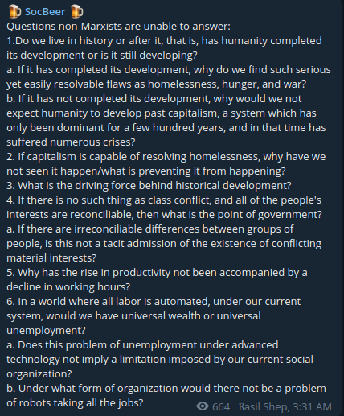

go HOME -----------------ON SOCIOLOGICAL THEORY---------------------------------
Preface: I recently went out for a walk in a park wearing my p100 respirator after spending weeks of research looking up aerosol dispersion models and even going as far as conducting an acetate test to ensure that the mask was properly fitted. There I saw a man entirely maskless, outside in a city which just had had a devastating wave of covid which had left thousands dead. I asked him why he wasn't wearing one. His response was "Kinda humid today bruh". I stood there marvelling the elegance of his reply. thinking about how men like him but more powerful drive history. The enlightenment myth was that we're any better than chimps in our capacity for reason and civilization. The reality is that even these two facets of humanity come undone when not in service to the more primitive baser desires for oranges and comfort and sex. What we call society and civilization is just a veneer of order imposed through the epochs that allows for a sustained symbiosis of those embedded in unavoidable power hierarchies. the distributions of power change, cause upheavals and lead to rearrangements. But no objective rules or laws governing "history" seem to emerge beyond those of the more primitive biological kind. Or are there? what about the laws of society as theorized by the marxists? A marxist friend of mine sent me the following text. Below I'm presenting the questions that he believed "non-marxists" supposedly could not answer followed by my responses (as a former-marxist-now-??).  1. The sum total of recorded facts and knowledge and its study constitute the discipline of history. we presumably "live" in changing processes that have not terminated yet. I am rejecting the use of the term "development" because that seems to imply incremental buildup whereas i would rather describe human arrangements as not necessarily building/developing to an ideal but shifting due to unpredictable power processes. a. moot question if one rejects the development analogy b. maybe? one might argue that that there is scope for technological development within the current paradigm. and there might be newer economic models of arranging global society. it seems unlikely however that they will be based on LTV. my belief is that the left will die a protracted death and some newer radical economic branch may emerge. 2 . i do not think it is capable of fully resolving the problems of scarcity - but only alleviating them enough to the point the system keeps the goodwill of enough people to perpetuate. however i do not have to be a marxist to hold this view. 3. depends on the scale at which you want to classify the processes of history i guess? with a microscope a physicist might say "quantum forces". a biologist might say "the same rules governing bacteria in a petri dish". an anthropologist might say "the differing heterogeneous strategies to adapt to niches and acquire resources for a secure existence exhibited by most species animals". or maybe nothing. maybe things just happen and causal determinants and "driving forces" cannot be guessed at due to fundamental issues in observation and theorizing as discovered by hume, godel, heisenberg. 4. modern governments exist largely as regulatory behemoths to keep negative externalities and property violations in check with the ultimate goal of sustaining the newer economic arrangement. however the classification of all of population into two classes does not necessarily follow from this anymore - especially considering that there exists a spectrum of degree in which everyone owns private property now - each looking to exploit it maximally. two large clusters (one, extremely rich set of investors and the rest) may emerge due to the tendency towards inequality inherent in the current neoliberal model but it is not as sharp enough for this delineation to be taken seriously even by the workers who find participation in this economy providing them a general upward mobility - as opposed to being members of a static group. 5. likely multiple factors: substitution effect - with more commodities/products/resources up for grabs, people need to work longer hours to afford more such newer and more expensive goods. smartphones, healthcare, apparel, transportation all of which are more efficient, sophisticated and costlier than a century ago. but most likely - a competitive economy where making production cheaper is the surest way to guarantee a successful and lucrative enterprise which leads to employers overworking employees. again - i do not have to be a marxist to believe this. 6. i cannot conceive of a world where "all labour is automated". automation generally increases over epochs. from making bullocks till the soil millenia ago to large scale industries now - we have a tendency to automate a task and then allocate humans to newer more complex unautomated tasks. we don't do computing by hand now. what we do by hand is write code. if coding is automated we will allocate labor to higher order processes maybe that involve the management of programming bots. we will simply become more efficient. but it is unlikely that "all labour will be automated". such a condition automatically implies utopia of some sort. it is possible that something like agriculture might become entirely automated. but the tools of automation and materials consumed are never in infinite supply and therefore will require some marginal cost to produce that will be borne by the appropriator and for which some compensation earned by another good/labour will be expected i guess. but generally i cannot foresee the elimination of scarcity in the foreseeable future. food might become trivially cheap due to the heightened efficiency/automation of its production but it remains unclear whether at that point we will still be eating the same food and not more complex costlier substances produced synthetically that are required for a transhumanist epoch or something. On the validity of meta-models of society: the last century saw the collapse of almost every deterministic meta theory. in mathematics with godel demonstrating limitations of peano arithmetic, the collapse of formalism and logicism demonstrating that consistent, complete and decidable systems of logical reasoning that relied on conventional definitions of propositions/truths were not possible. One only has imperfect models that become inefficient with changes and newer are needed that do better approximations. but a clear meta-theory of what "drives history" is likely a philosophical or literary question that imo will never have an objective answer - the veracity and correctness of which can be proven. I live in a country where the motivations and logic employed to attain them are about as diverse and bizarre as there are houses. it's really humbling to see that so much happens here outside the logical realm of marxism or western rational thought. I see history as the chaotic tumult of residual forces. like lava churning. not necessarily towards anything concrete or with any obviously helpful theoretical explanation. But just processes that haven't arrived at an equilibrium yet. ------------------------------- I was then asked "are you a defeatist/anarchist"? Response: the current govt+free-market model seems to fail in preventing inequality or shared costs. I suspect that a newer economic arrangement will eventually be suggested which accounts for externalities. but it will be done so only when the current arrangement becomes untenable and closer to collapse. what comes after is anyone's guess. but i think it will likely not be based on LTV (since the heterogeneity of resources and manufacturing processes makes it impossible to fix an average socially necessary labour time that can be used to fix a value of a good that ALL of society can agree on). nor do i think uneven distributions in power and wealth will be eliminated for a more homogenous population. the way bacteria haven't arrived at an egalitarian equilibrium, i suspect even human populations might not. some communities will go extinct. some will thrive. some will undergo violent rearrangements. The point is, that i do not have to be a marxist (whatever that means anymore) to believe that current social arrangements might and will collapse due to some reason or the other -------------------------------------------------------------- On disagreement Another issue i find is the problem of agreement. leftist disagreement has been acknowledged since leftism. but the fundamental cause of such disagreement has not been acknowledged. what's the reason why communities of leftists fractally divide until nobody agrees decidedly with anyone else? why do mathematicians don't face this problem? because the former is a linguistic system of conceptualizing using natural language the meanings, interpretations and reasoning style of which is as diverse as there are people. it cannot possibly succeed in becoming an objective meta theory of history in light of that imo. Addendum “A theory that explains everything, explains nothing” ― Karl Popper A "theory" that promises utopia and a beautiful egalitarian world is not necessarily correct by virtue of its values. Here correctness is defined by a theory's capacity to accurately model behavior and consequently predict events reliably. Nor is the theory's virtuousness adequate justification for its objective correctness. That is not to say that the theory's virtuousness makes it useless. It can be used as a moral weapon in achieving social justice. But then it's less an objective "virtue-blind" theory but more a propaganda tool for a political end (which is arguably "just" (what is justice anyway?)). If my theory is "the cosmos makes everthing happen" or "history is the progenitor of human action" or some new age bullshit of the sort then my theory is practically useless. Why? Because using these "catch all" theories I can predict anything that happens. "Oh you ended up in an accident? My theory predicted it" "Oh you avoided that accident? My theory predited that too". Well then what good is this theory? Theory: "The proles on reaching a state of immiseration will rise up in revolution except in certain circumstances when they will vote for fascists" Case I: "The proles became desperate and rebelled and went on a strike. My theory of class struggle predicted it!" Case II: "The proles became desperate and voted fascists into power. My theory of class struggle predicted it!" Well what can I do with this theory that can never be wrong and predicts every possible outcome? It gives me no information about what exactly will happen and will NOT happen. Because according to it, everything is possible and only retroactive justifications can be made. At this point i'm not sure if something of the sort can even be called theory. At best it's just another moral weapon. A religion maybe. Lesson: When modeling life around you, ensure that your model delinates what will happen from what will not. This allows for a theory to fail and in its failure allow for a better one to emerge. Falsifiability is important